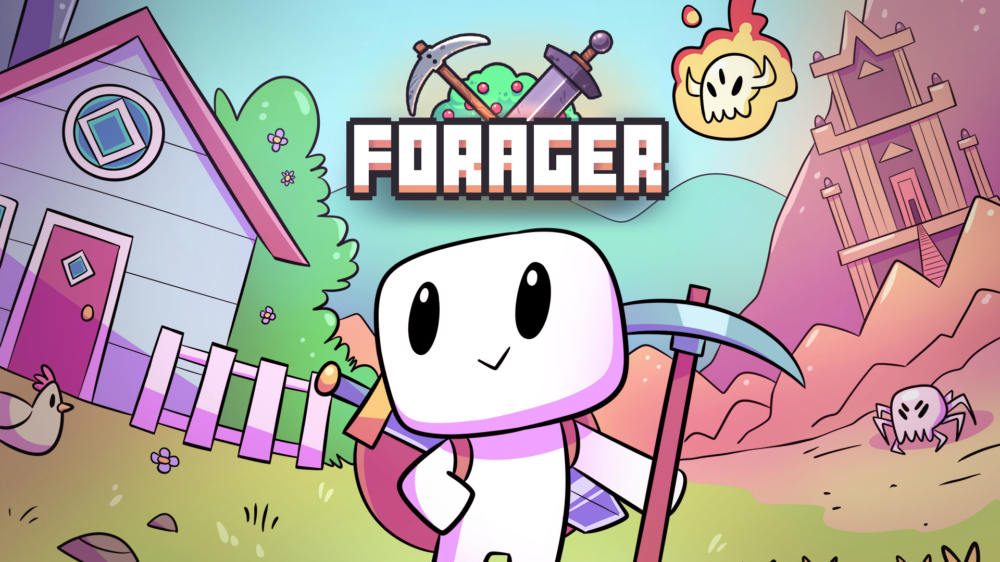
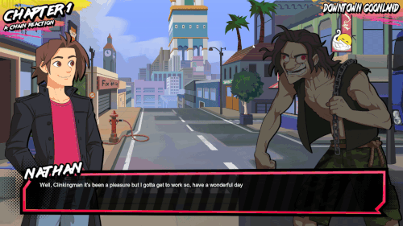
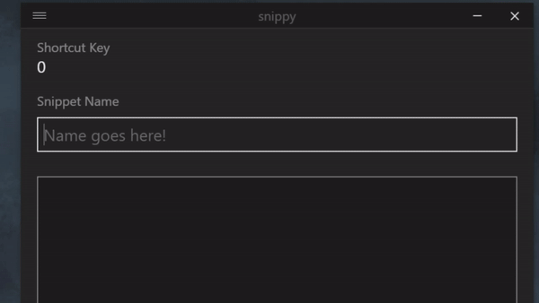

about
Hey there! I'm lazyeye, or Gabe, if you prefer. I work out of the Chicagoland area making games, tools, and whatever else can grab my interest. I've been messing around with game development since a young age, and playing video games since I was even younger. I am extraordinarily passionate about this profession, and am always excited to learn new things.
While my skills range into multiple areas, such as GameMakerStudio 2, Python, JavaScript, my number one skill is my ability to learn -- everything that I know is self taught. Outside of programming, I also host a podcast called obj_podcast, and am an admin for the GameMaker Discord Server.
links
- @imlazyeye
- ➤ Itch
- lazyeye.itch.io
- imlazyeye@gmail.com
my work
Smithy of the Fishy
Programmer
A dungeon crawling arcade game completed in 48 hours with @BenStarDev and @FailPositive for the GM48 game jam.

Forager
Optimization Programmer
Forager is the popular crafting, exploration and base building game that can best be defined as “the idle game that you want to actively keep playing”
Flappatron
Systems Programmer
A visual novel with bullet hell elements, created by Manning Media. Release date TBA.

lazyload
Backend Programmer
A sprite managment tool for GMS2 that allows for automatic importing / updating, alphabetical resource tree sorting, and more.

snippy
Backend Programmer
A free tool for GameMaker Studio 2 that allows you to edit the default code snippets for the IDE.
GMTransfer
Programmer
A resource importer to merge files from one project to another in GameMaker Studio 2.